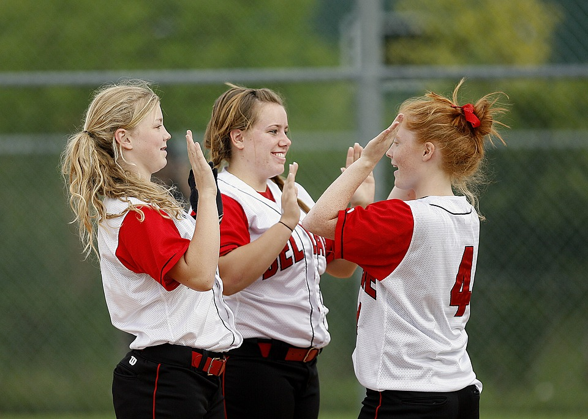
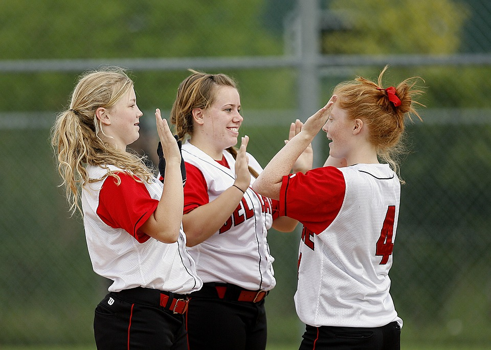

Who we are
Cylch Coch is a project based within communities of North Wales. With the donations and fundraising efforts of the local people we will provide secondary schools with sanitary products and information. Our aim is to tackle period poverty and taboo, to keep young girls in school and for them to feel comfortable to talk about their period. Together we will raise confident young women.

 
